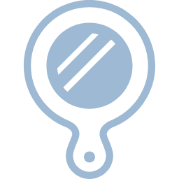
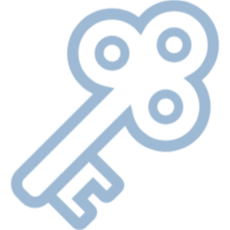
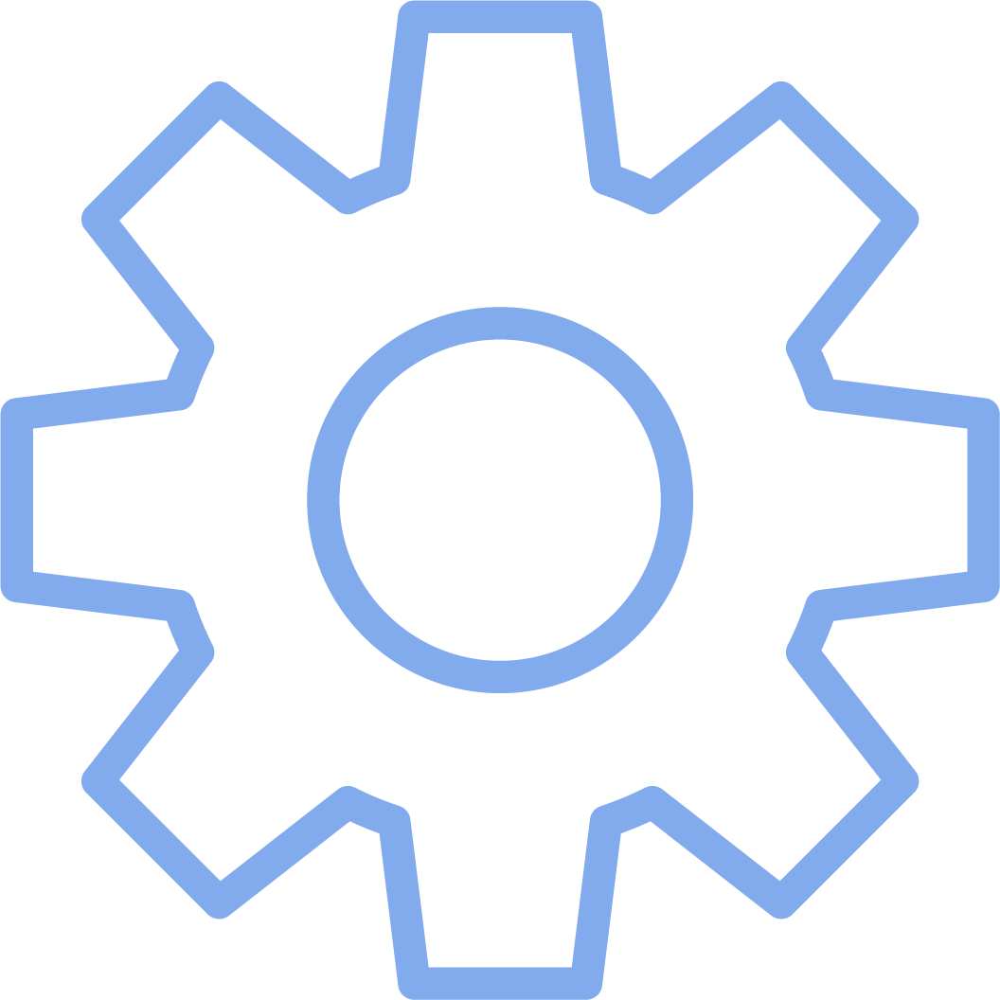

<!DOCTYPE html>
<html lang="ja">

<head>
  <meta charset="UTF-8">
  <meta name="viewport" content="width=device-width, initial-scale=1.0">
  <title>日記</title>
  <link rel="stylesheet" href="css/style.css">
  <link rel="preconnect" href="https://fonts.googleapis.com">
  <link rel="preconnect" href="https://fonts.gstatic.com" crossorigin>
  <link href="https://fonts.googleapis.com/css2?family=Klee+One&family=Kosugi+Maru&family=Shippori+Mincho&display=swap" rel="stylesheet">
  <link rel="icon" type="image/png" href="img/手帳アイコン.png">
</head>

<body>
  <div id="diary-root"></div>
  <script>
    (function () {
      const root = document.getElementById('diary-root');
      const FONT_OPTIONS = [
        { id: 'gothic', label: 'やさしいゴシック', css: "-apple-system, 'Hiragino Kaku Gothic ProN', 'Yu Gothic', sans-serif" },
        { id: 'mincho', label: '静かな明朝体', css: "'Shippori Mincho', 'Hiragino Mincho ProN', 'Yu Mincho', serif" },
        { id: 'round', label: 'まる文字', css: "'Kosugi Maru', 'Hiragino Maru Gothic ProN', 'Yu Gothic', sans-serif" },
        { id: 'write', label: '手書き風', css: "'Klee One', 'Yu Gothic', cursive" },
      ];
      const STAMPS = ['😊', '🙂', '🥲', '😢', '😡', '😴', '😌', '🌧️', '☀️', '💭', '🫠', '🥹', '😮‍💨', '🌙', '✨',
        '☕', '🛌', '🎧', '📚', '🌸', '🍜', '🎉', '🏃', '🐶', '🎮', '📷', '🌈'];

      const STORAGE_KEY = 'diary_data';
      const ANALYSIS_KEY = 'diary_analysis';
      const SYNC_ID_KEY = 'diary_sync_id';       // 匿名ID（秘密情報ではない。サーバー側の行を特定するためだけの値）
      const SYNC_TOKEN_KEY = 'diary_sync_secret'; // 秘密トークン（画面・URL・ログには一切出さない）
      const PHASE3_MIGRATION_FLAG = 'diary_phase3_migrated'; // Phase3導入時の強制再送(平文D1データの上書き)が済んだかどうか

      let state = {
        entries: [],
        settings: { defaultFont: 'gothic', pinHash: null, tags: [], theme: 'dark' },
        syncVersion: 0,   // 変更のたびに増える。ローカルの「最新」を表す
        syncedVersion: 0, // Cloudflareへの送信に成功した時点のバージョン
        locked: false,
        loaded: false,
        mode: 'text',
        draftText: '',
        draftFont: 'gothic',
        draftPhoto: null,
        draftTags: [],
        query: '',
        tagFilter: null,
        decrypted: {},
        openMenuId: null,
        reframing: {},
        modal: null,
        toast: null,
        analysis: null,
        analysisLoaded: false,
        analysisLoading: false,
        pendingDeleteTag: null,
        composerTagsExpanded: false,
        filterTagsExpanded: false,
      };

      // ---------------- storage helpers ----------------
      async function loadData() {
        try {
          const val = localStorage.getItem(STORAGE_KEY);
          if (val) {
            const parsed = JSON.parse(val);
            state.entries = parsed.entries || [];
            state.settings = Object.assign({ defaultFont: 'gothic', pinHash: null, tags: [], theme: 'dark' }, parsed.settings || {});
            state.syncVersion = parsed.syncVersion || 0;
            state.syncedVersion = parsed.syncedVersion || 0;
          }
        } catch (e) { /* first run */ }
        state.locked = !!state.settings.pinHash;
        state.draftFont = state.settings.defaultFont || 'gothic';
        applyTheme();
        state.loaded = true;
        render();
        // Phase 3導入後、初回起動時だけ、D1に残っている旧・平文データを
        // 暗号化データで確実に上書きするため、強制的に「未同期」扱いにする
        if (!localStorage.getItem(PHASE3_MIGRATION_FLAG)) {
          localStorage.setItem(PHASE3_MIGRATION_FLAG, '1');
          state.syncVersion++;
          saveLocal();
        }
        // 前回、通信できずに未同期のまま終わっていた変更があれば、起動時に再送を試みる
        backgroundSync();
      }

      function saveLocal() {
        try {
          localStorage.setItem(STORAGE_KEY, JSON.stringify({
            entries: state.entries,
            settings: state.settings,
            syncVersion: state.syncVersion,
            syncedVersion: state.syncedVersion,
          }));
          return true;
        } catch (e) {
          return false;
        }
      }

      async function persist() {
        state.syncVersion++; // 変更があったことを記録（この時点ではまだCloudflareには送っていない）
        if (!saveLocal()) {
          showToast('保存に失敗しました。もう一度お試しください。');
        }
      }

      async function loadAnalysis() {
        try {
          const val = localStorage.getItem(ANALYSIS_KEY);
          if (val) state.analysis = JSON.parse(val);
        } catch (e) { /* none yet */ }
      }

      async function saveAnalysis() {
        try {
          localStorage.setItem(ANALYSIS_KEY, JSON.stringify(state.analysis));
        } catch (e) { }
      }

      // ---------------- crypto helpers ----------------
      function toB64(buf) { return btoa(String.fromCharCode(...new Uint8Array(buf))); }
      function fromB64(str) { const bin = atob(str); const arr = new Uint8Array(bin.length); for (let i = 0; i < bin.length; i++) arr[i] = bin.charCodeAt(i); return arr; }
      async function sha256Hex(text) {
        const buf = await crypto.subtle.digest('SHA-256', new TextEncoder().encode(text));
        return Array.from(new Uint8Array(buf)).map(b => b.toString(16).padStart(2, '0')).join('');
      }
      async function deriveKey(passphrase, saltBytes) {
        const keyMaterial = await crypto.subtle.importKey('raw', new TextEncoder().encode(passphrase), { name: 'PBKDF2' }, false, ['deriveKey']);
        return crypto.subtle.deriveKey({ name: 'PBKDF2', salt: saltBytes, iterations: 120000, hash: 'SHA-256' }, keyMaterial, { name: 'AES-GCM', length: 256 }, false, ['encrypt', 'decrypt']);
      }
      async function encryptText(text, passphrase) {
        const salt = crypto.getRandomValues(new Uint8Array(16));
        const iv = crypto.getRandomValues(new Uint8Array(12));
        const key = await deriveKey(passphrase, salt);
        const cipherBuf = await crypto.subtle.encrypt({ name: 'AES-GCM', iv }, key, new TextEncoder().encode(text));
        return { cipher: toB64(cipherBuf), salt: toB64(salt), iv: toB64(iv) };
      }
      async function decryptText(payload, passphrase) {
        const salt = fromB64(payload.salt), iv = fromB64(payload.iv), cipher = fromB64(payload.cipher);
        const key = await deriveKey(passphrase, salt);
        const plainBuf = await crypto.subtle.decrypt({ name: 'AES-GCM', iv }, key, cipher);
        return new TextDecoder().decode(plainBuf);
      }

      // ---------------- Cloudflare送信専用の暗号鍵 (Phase 3) ----------------
      // 「保護」機能(パスフレーズ入力)とは完全に別物。ユーザーには一切意識させず、
      // 端末内で自動生成したランダムな鍵をそのまま使う。Cloudflareへは絶対に送らない。
      const CLOUD_KEY_STORAGE = 'diary_cloud_enc_key';
      let cachedCloudKey = null;
      async function getOrCreateCloudKey() {
        if (cachedCloudKey) return cachedCloudKey;
        let raw = localStorage.getItem(CLOUD_KEY_STORAGE);
        if (!raw) {
          const key = await crypto.subtle.generateKey({ name: 'AES-GCM', length: 256 }, true, ['encrypt', 'decrypt']);
          raw = toB64(await crypto.subtle.exportKey('raw', key));
          localStorage.setItem(CLOUD_KEY_STORAGE, raw);
        }
        cachedCloudKey = await crypto.subtle.importKey('raw', fromB64(raw), { name: 'AES-GCM' }, false, ['encrypt', 'decrypt']);
        return cachedCloudKey;
      }
      // 任意のオブジェクトをJSON化してAES-GCMで暗号化する。Cloudflareに送るのはこの戻り値だけ。
      async function encryptForCloud(obj) {
        const key = await getOrCreateCloudKey();
        const iv = crypto.getRandomValues(new Uint8Array(12));
        const plainBuf = new TextEncoder().encode(JSON.stringify(obj));
        const cipherBuf = await crypto.subtle.encrypt({ name: 'AES-GCM', iv }, key, plainBuf);
        return { v: 1, iv: toB64(iv), cipher: toB64(cipherBuf) };
      }

      // ---------------- image helper ----------------
      function fileToCompressedDataURL(file) {
        return new Promise((resolve, reject) => {
          const reader = new FileReader();
          reader.onload = () => {
            const img = new Image();
            img.onload = () => {
              const maxW = 900;
              const scale = Math.min(1, maxW / img.width);
              const canvas = document.createElement('canvas');
              canvas.width = img.width * scale;
              canvas.height = img.height * scale;
              const ctx = canvas.getContext('2d');
              ctx.drawImage(img, 0, 0, canvas.width, canvas.height);
              resolve(canvas.toDataURL('image/jpeg', 0.72));
            };
            img.onerror = reject;
            img.src = reader.result;
          };
          reader.onerror = reject;
          reader.readAsDataURL(file);
        });
      }

      // ---------------- AI calls ----------------
      const WORKER_URL = 'https://diary-proxy.my-dev-lab.workers.dev';

      // ---------------- Cloudflare D1 自動バックアップ (Phase 1) ----------------
      // 匿名ID・秘密トークンは初回のみ自動生成してブラウザ内に保存する。会員登録やログインは一切発生しない。
      // 秘密トークンは画面・URL・console.log・エラーメッセージのいずれにも出さず、専用ヘッダーでのみ送信する。
      function getOrCreateSyncCredentials() {
        let id = localStorage.getItem(SYNC_ID_KEY);
        let token = localStorage.getItem(SYNC_TOKEN_KEY);
        if (!id) {
          id = (crypto.randomUUID ? crypto.randomUUID() : toB64(crypto.getRandomValues(new Uint8Array(16))));
          localStorage.setItem(SYNC_ID_KEY, id);
        }
        if (!token) {
          const bytes = crypto.getRandomValues(new Uint8Array(32)); // 256bit・十分にランダム
          token = Array.from(bytes).map(b => b.toString(16).padStart(2, '0')).join('');
          localStorage.setItem(SYNC_TOKEN_KEY, token);
        }
        return { id, token };
      }

      // ローカル保存が完了した"後"に、裏側で静かにCloudflareへバックアップを試みる。
      // 送信前に必ず暗号化する。暗号化・通信のどちらが失敗しても false を返すだけで、
      // 平文のまま送る、といったフォールバックは一切行わない。
      async function backupToCloud() {
        try {
          const { id, token } = getOrCreateSyncCredentials();

          // 日記は1件ずつ暗号化する（D1側で行を個別に扱うため）。本文だけでなく
          // タグ・作成日時・「いったんしまう」状態なども含めて丸ごと暗号化する。
          const encryptedEntries = [];
          for (const e of state.entries) {
            encryptedEntries.push({ id: e.id, encrypted: await encryptForCloud(e) });
          }
          const encryptedSettings = await encryptForCloud(state.settings);

          const controller = new AbortController();
          const timer = setTimeout(() => controller.abort(), 6000);
          const res = await fetch(WORKER_URL + '/sync', {
            method: 'POST',
            headers: {
              'Content-Type': 'application/json',
              'X-Diary-Token': token, // 秘密トークンは専用ヘッダーのみ。ボディやURLには含めない
            },
            body: JSON.stringify({ anonId: id, entries: encryptedEntries, settings: encryptedSettings }),
            signal: controller.signal,
          });
          clearTimeout(timer);
          return res.ok;
        } catch (e) {
          // 暗号化の失敗・通信失敗・タイムアウトなど。技術的な詳細は握りつぶし、画面には出さない。
          // ここで平文を送ることは絶対にしない。
          return false;
        }
      }

      // ---------------- Cloudflare D1 同期キュー (Phase 2) ----------------
      // 「アプリ全体の最新状態(state.syncVersion)」と「最後に送信できた状態(state.syncedVersion)」の
      // ズレだけで未同期かどうかを判定する。日記ごとの個別フラグは持たない。
      let syncInFlight = false;
      function isPendingSync() { return state.syncVersion !== state.syncedVersion; }

      // 実際に1回だけ送信を試みる。同時に2つ走らせないようにガードしている。
      // 送信中にさらに新しい変更が発生していた場合は、完了後にもう一度だけ続けて送り直す。
      async function attemptSync() {
        if (syncInFlight) return null;   // 既に送信中。ここでは何もしない
        if (!isPendingSync()) return true; // 送るものがない = 同期済み
        syncInFlight = true;
        const versionAttempted = state.syncVersion;
        const ok = await backupToCloud();
        syncInFlight = false;
        if (ok) {
          state.syncedVersion = versionAttempted;
          saveLocal();
          if (isPendingSync()) attemptSync(); // 送信中に増えた分があれば続けて送る
        }
        // 失敗時は何もしない。次のトリガー(起動・オンライン復帰・次の保存・定期チェック)まで待つ
        return ok;
      }

      // 結果を気にしない場所から呼ぶ用（トーストは出さない）
      function scheduleSync() { attemptSync(); }

      // 起動時・オンライン復帰時・定期チェックから呼ぶ用。
      // 「以前失敗していた分が、今回の再送で無事に届いた」場合だけ、控えめに知らせる。
      async function backgroundSync() {
        const wasPending = isPendingSync();
        const ok = await attemptSync();
        if (wasPending && ok) showToast('保存済み');
      }

      window.addEventListener('online', () => backgroundSync());
      // Service Workerなどは使わず、開いているタブの中だけで完結する軽量な保険。
      // 未同期のときだけ、45秒に1回だけ静かに再送を試みる（無制限の連続再送は行わない）。
      setInterval(() => { if (isPendingSync()) backgroundSync(); }, 45000);

      // 日記のリフレーミング（言い換え）実行関数
      async function reframeText(text) {
        try {
          const response = await fetch(WORKER_URL, {
            method: 'POST',
            headers: { 'Content-Type': 'application/json' },
            body: JSON.stringify({ text })
          });

          if (!response.ok) {
            const errData = await response.json().catch(() => ({}));
            console.error('Reframe API Error:', errData);
            throw new Error(`APIエラー: ${response.status}`);
          }

          const data = await response.json();
          return data.candidates[0].content.parts[0].text.trim();
        } catch (error) {
          console.error('Reframe failed:', error);
          showToast('言い換えに失敗しました。通信状態を確認してください。');
          return null;
        }
      }

      // 日記全体の分析機能（自己理解）
      async function generateAnalysis(entries) {
        const targetEntries = entries || (typeof state !== 'undefined' && state.entries) || [];
        const textList = targetEntries.filter(e => e.type === 'text' && !e.encrypted && e.text).map(e => `- ${e.text}`).join('\n');

        if (!textList) {
          showToast('分析できる日記がありません。');
          return;
        }

        state.analysisLoading = true;
        render();

        const prompt = `あなたは心理カウンセラーです。以下に蓄積されたユーザーの日記一覧を読み、全体的な感情の傾向、思考の癖、そして温かいアドバイスを300文字程度で要約・分析してください。\n\n【日記一覧】\n${textList}`;

        try {
          const response = await fetch(WORKER_URL, {
            method: 'POST',
            headers: { 'Content-Type': 'application/json' },
            body: JSON.stringify({ prompt })
          });

          if (!response.ok) throw new Error('分析エラー');

          const data = await response.json();
          const resultText = data.candidates[0].content.parts[0].text.trim();

          state.analysis = {
            text: resultText,
            basedOnCount: targetEntries.filter(e => e.type === 'text' && !e.encrypted).length,
            generatedAt: Date.now()
          };
          await saveAnalysis();
        } catch (error) {
          console.error('Analysis failed:', error);
          showToast('分析の生成に失敗しました。');
        } finally {
          state.analysisLoading = false;
          render();
        }
      }

      // ---------------- actions ----------------
      function showToast(msg) { state.toast = msg; render(); setTimeout(() => { state.toast = null; render(); }, 2400); }

      async function saveTextEntry() {
        const text = state.draftText.trim();
        if (!text) return;
        state.entries.unshift({
          id: 'e' + Date.now() + Math.random().toString(36).slice(2, 6),
          type: 'text', text, font: state.draftFont, photo: state.draftPhoto, tags: [...state.draftTags],
          encrypted: false, cipher: null, reframedText: null, reframeVisible: false, isHidden: false, ts: Date.now()
        });
        state.draftText = ''; state.draftPhoto = null; state.draftTags = [];
        await persist(); render();
        // 画面はここで既に更新済み。以降はクラウド側の結果に応じて表示だけを更新する
        showToast('保存しました');
        const slowTimer = setTimeout(() => showToast('バックアップ中…'), 900);
        const ok = await attemptSync();
        clearTimeout(slowTimer);
        showToast(ok ? '保存済み' : 'この端末に保存済み');
      }
      async function saveStampEntry(emoji) {
        state.entries.unshift({ id: 'e' + Date.now() + Math.random().toString(36).slice(2, 6), type: 'stamp', stamp: emoji, isHidden: false, ts: Date.now() });
        await persist(); render();
        showToast('保存しました');
        const slowTimer = setTimeout(() => showToast('バックアップ中…'), 900);
        const ok = await attemptSync();
        clearTimeout(slowTimer);
        showToast(ok ? '保存済み' : 'この端末に保存済み');
      }
      async function deleteEntry(id) {
        state.entries = state.entries.filter(e => e.id !== id);
        delete state.decrypted[id];
        if (state.openMenuId === id) state.openMenuId = null;
        await persist(); render();
        scheduleSync();
      }
      async function doReframe(id) {
        const entry = state.entries.find(e => e.id === id);
        if (!entry || entry.encrypted) return;
        if (entry.reframeVisible) {
          // 表示中 → 枠ごと隠すだけ。APIは呼ばない
          entry.reframeVisible = false;
          await persist();
          render();
          scheduleSync();
          return;
        }
        // 隠れている → 新しく言いかえを生成して表示する
        state.reframing[id] = true; render();
        try {
          const result = await reframeText(entry.text);
          if (!result) { throw new Error('Reframe failed'); }
          entry.reframedText = result;
          entry.reframeVisible = true;
          await persist();
          scheduleSync();
        } catch (e) {
          showToast('うまくいきませんでした。もう一度お試しください。');
        }
        state.reframing[id] = false; render();
      }
      async function doEncrypt(id, passphrase) {
        const entry = state.entries.find(e => e.id === id);
        if (!entry || !passphrase) return;
        const payload = await encryptText(entry.text, passphrase);
        entry.cipher = payload;
        entry.encrypted = true;
        entry.text = null;
        await persist();
        state.modal = null; render();
        showToast('保護しました。パスフレーズは保存されません。');
        scheduleSync();
      }
      async function doDecrypt(id, passphrase) {
        const entry = state.entries.find(e => e.id === id);
        if (!entry || !entry.cipher) return 'error';
        try {
          const plain = await decryptText(entry.cipher, passphrase);
          // 表示するだけで「保護」設定(entry.encrypted)は変更しない
          state.decrypted[id] = plain;
          state.modal = null; render();
        } catch (e) { return 'error'; }
      }
      // 「保護を解除する」：暗号化(保護)設定を永続的に解除する。「今は見ない」とは無関係
      async function doRestore(id) {
        const entry = state.entries.find(e => e.id === id);
        if (!entry) return;
        const plain = state.decrypted[id];
        if (plain == null) return; // 一時表示していないと戻せない
        entry.text = plain;
        entry.encrypted = false;
        entry.cipher = null;
        delete state.decrypted[id];
        state.openMenuId = null;
        await persist();
        state.modal = null; render();
        showToast('保護を解除しました。');
        scheduleSync();
      }
      // 「今は見ない」：暗号化とは無関係の、単純な表示/非表示の切り替え。認証なし・ワンタップ
      async function toggleHidden(id) {
        const entry = state.entries.find(e => e.id === id);
        if (!entry) return;
        entry.isHidden = !entry.isHidden;
        if (state.openMenuId === id) state.openMenuId = null;
        await persist();
        render();
        showToast(entry.isHidden ? '🌙 日記をしまいました\n「しまった日記」から、いつでも見返せます。' : '通常の日記に戻しました');
        scheduleSync();
      }
      async function setPin(pin) {
        state.settings.pinHash = await sha256Hex(pin);
        await persist();
        state.modal = null; render();
        showToast('ロックを設定しました。');
        scheduleSync();
      }
      async function removePin() {
        state.settings.pinHash = null;
        await persist();
        state.modal = null; render();
        showToast('ロックを解除しました。');
        scheduleSync();
      }
      function addNewTag(name) {
        name = (name || '').trim();
        if (!name) return;
        if (!state.settings.tags.includes(name)) { state.settings.tags.unshift(name); persist(); scheduleSync(); }
        if (!state.draftTags.includes(name)) state.draftTags.push(name);
        render();
      }
      // タグ削除：候補リストから消すだけで、過去の日記が持つタグ(entry.tags)は書き換えない
      async function deleteTag(name) {
        if (!name) return;
        const i = state.settings.tags.indexOf(name);
        if (i === -1) return;
        state.settings.tags.splice(i, 1);
        const di = state.draftTags.indexOf(name);
        if (di !== -1) state.draftTags.splice(di, 1);
        if (state.tagFilter === name) state.tagFilter = null;
        state.pendingDeleteTag = null;
        state.modal = null;
        await persist();
        render();
        showToast(`「${name}」タグを削除しました`);
        scheduleSync();
      }
      // 「⋯」メニューの外側をクリックしたら自動で閉じる
      function bindOutsideMenuClose() {
        setTimeout(() => {
          document.addEventListener('click', function handler(ev) {
            if (!ev.target.closest('.dr-menu-wrap')) { state.openMenuId = null; render(); }
            document.removeEventListener('click', handler);
          });
        }, 0);
      }

      // ---------------- render ----------------
      function esc(s) { const d = document.createElement('div'); d.textContent = s == null ? '' : s; return d.innerHTML; }
      function fontCss(id) { const f = FONT_OPTIONS.find(f => f.id === id); return f ? f.css : FONT_OPTIONS[0].css; }
      function applyTheme() { root.classList.toggle('theme-light', state.settings.theme === 'light'); }
      function fmtDate(ts) {
        const d = new Date(ts);
        return d.getFullYear() + '年' + (d.getMonth() + 1) + '月' + d.getDate() + '日 ' + String(d.getHours()).padStart(2, '0') + ':' + String(d.getMinutes()).padStart(2, '0');
      }
      // タグの表示数を制限し、「すべてのタグを見る」で展開できるようにする共通ヘルパー
      const TAG_SHOW_LIMIT = 8;
      function renderTagChips(tags, opts) {
        const expanded = opts.expanded;
        const shown = expanded ? tags : tags.slice(0, TAG_SHOW_LIMIT);
        const hasMore = tags.length > TAG_SHOW_LIMIT;
        const chipsHtml = shown.map(opts.chipHtml).join('');
        const toggleHtml = hasMore
          ? `<button class="dr-tag-expand-btn" id="${opts.toggleId}">${expanded ? '閉じる' : `すべてのタグを見る（${tags.length}）`}</button>`
          : '';
        return { chipsHtml, toggleHtml };
      }

      function render() {
        if (!state.loaded) { root.innerHTML = ''; return; }
        if (state.locked) { renderLockScreen(); return; }

        // 「しまった日記」一覧など、内部スクロールを持つ要素は再描画で位置がリセットされるため保存しておく
        const prevScroll = {};
        root.querySelectorAll('[data-preserve-scroll]').forEach(elm => {
          prevScroll[elm.dataset.preserveScroll] = elm.scrollTop;
        });

        const usedTags = Array.from(new Set(state.entries.flatMap(e => e.tags || [])));
        const hiddenCount = state.entries.filter(e => e.isHidden).length;
        const filtered = state.entries.filter(e => {
          if (e.isHidden) return false;
          if (state.tagFilter && !((e.tags || []).includes(state.tagFilter))) return false;
          if (!state.query) return true;
          if (e.type === 'stamp' || e.encrypted) return false;
          return (e.text || '').toLowerCase().includes(state.query.toLowerCase());
        });

        const filterTags = renderTagChips(usedTags, {
          expanded: state.filterTagsExpanded,
          toggleId: 'dr-filter-tags-toggle',
          chipHtml: t => `<button class="dr-tag-chip ${state.tagFilter === t ? 'selected' : ''}" data-tag-filter="${esc(t)}">#${esc(t)}</button>`,
        });
        const composerTags = renderTagChips(state.settings.tags, {
          expanded: state.composerTagsExpanded,
          toggleId: 'dr-composer-tags-toggle',
          chipHtml: t => `<button class="dr-tag-chip ${state.draftTags.includes(t) ? 'selected' : ''}" data-tag-toggle="${esc(t)}">${esc(t)}</button>`,
        });

        root.innerHTML = `
        <div class="dr-wrap">
          <div class="dr-header">
            <div class="dr-header-actions">
              <button class="dr-icon-btn" id="dr-open-analysis" title="じぶんを見つめる"></button>
              ${state.settings.pinHash ? '<button class="dr-icon-btn" id="dr-lock-now" title="ロックする"></button>' : ''}
              <button class="dr-icon-btn" id="dr-open-settings" title="設定"></button>
            </div>
            <div class="dr-header-center">
              <svg class="dr-moon" viewBox="0 0 24 24" fill="none" stroke="var(--ink-soft)" stroke-width="1.3" stroke-linecap="round" stroke-linejoin="round"><path d="M21 12.79A9 9 0 1 1 11.21 3 7 7 0 0 0 21 12.79z"/></svg>
              <p class="dr-title">日記</p>
              <p class="dr-subtitle">思ったことを、思ったままに</p>
            </div>
          </div>

          <div class="dr-search">
            <span class="dr-search-icon"></span>
            <input id="dr-search-input" type="text" placeholder="日記を検索" value="${esc(state.query)}" />
          </div>
          ${usedTags.length ? `<div class="dr-filter-row">${filterTags.chipsHtml}</div>${filterTags.toggleHtml}` : ''}
          ${hiddenCount > 0 ? `<button class="dr-hidden-entry" id="dr-open-hidden">🌙 しまった日記（${hiddenCount}件）</button>` : ''}

          <div class="dr-composer">
            <div class="dr-mode-toggle">
              <button data-mode="text" class="${state.mode === 'text' ? 'active' : ''}">書く</button>
              <button data-mode="stamp" class="${state.mode === 'stamp' ? 'active' : ''}">スタンプだけ</button>
            </div>
            ${state.mode === 'text' ? `
              <textarea class="dr-textarea" id="dr-textarea" placeholder="今日はどんな一日でしたか。良いことも、そうでないことも。" style="font-family:${fontCss(state.draftFont)}">${esc(state.draftText)}</textarea>
              ${state.draftPhoto ? `
                <div class="dr-photo-preview">
                  
                  <button class="dr-remove-photo" id="dr-remove-photo">×</button>
                </div>` : ''}
              <div class="dr-tag-row">
                ${composerTags.chipsHtml}
                <input class="dr-tag-add-input" id="dr-new-tag-input" placeholder="+ タグを追加" />
              </div>
              ${composerTags.toggleHtml}
              <div class="dr-composer-row">
                <div class="dr-composer-tools">
                  <select class="dr-font-select" id="dr-font-select">
                    ${FONT_OPTIONS.map(f => `<option value="${f.id}" ${f.id === state.draftFont ? 'selected' : ''}>${f.label}</option>`).join('')}
                  </select>
                  <button class="dr-photo-btn" id="dr-photo-btn" title="写真を貼る"></button>
                  <input type="file" id="dr-photo-input" accept="image/*" style="display:none" />
                </div>
                <button class="dr-save-btn" id="dr-save-btn" ${state.draftText.trim() ? '' : 'disabled'}>書きとめる</button>
              </div>
            ` : `
              <div class="dr-stamp-grid">
                ${STAMPS.map(s => `<button data-stamp="${s}">${s}</button>`).join('')}
              </div>
            `}
          </div>

          ${filtered.length === 0 ? `
            <div class="dr-empty">${(state.query || state.tagFilter) ? '見つかりませんでした。' : 'まだ何も書かれていません。<br/>思いつくままに、ひとことから。'}</div>
          ` : filtered.map(renderEntry).join('')}
        </div>

        ${state.modal ? renderModal() : ''}
        ${state.toast ? `<div class="dr-toast">${esc(state.toast)}</div>` : ''}
      `;
        attachEvents();
        root.querySelectorAll('[data-preserve-scroll]').forEach(elm => {
          const key = elm.dataset.preserveScroll;
          if (prevScroll[key] != null) elm.scrollTop = prevScroll[key];
        });
      }

      function renderEntry(e, opts) {
        opts = opts || {};
        const hideChip = `<button class="dr-chip" data-hide-toggle="${e.id}">🌙 ${opts.inHiddenList ? 'しまうのをやめる' : 'いったんしまう'}</button>`;
        if (e.type === 'stamp') {
          return `
          <div class="dr-entry">
            <div class="dr-entry-time">${fmtDate(e.ts)}</div>
            <div class="dr-entry-stamp">${e.stamp}</div>
            <div class="dr-entry-actions">
              ${hideChip}
              <button class="dr-chip danger" data-del="${e.id}">削除</button>
            </div>
          </div>`;
        }
        if (e.encrypted) {
          const plain = state.decrypted[e.id];
          if (plain) {
            // 一時的に開いている状態：本文表示 + 右上に「⋯」メニュー（保護の解除・削除）
            return `
            <div class="dr-entry">
              <div class="dr-entry-top">
                <div class="dr-entry-time">${fmtDate(e.ts)} · 🔓 一時的に開いています</div>
                <div class="dr-menu-wrap">
                  <button class="dr-menu-btn" data-menu-toggle="${e.id}" title="メニュー">⋯</button>
                  ${state.openMenuId === e.id ? `
                    <div class="dr-menu-dropdown">
                      <button class="dr-menu-item" data-restore="${e.id}">🔓 保護を解除する</button>
                      <button class="dr-menu-item danger" data-del="${e.id}">🗑 削除</button>
                    </div>` : ''}
                </div>
              </div>
              <div class="dr-entry-text" style="font-family:${fontCss(e.font)}">${esc(plain)}</div>
              <div class="dr-entry-actions">${hideChip}</div>
            </div>`;
          }
          // 保護されている状態：本文は隠したまま、見るための操作だけを表示
          return `
          <div class="dr-entry">
            <div class="dr-entry-time">${fmtDate(e.ts)}</div>
            <div class="dr-locked-card">
              <div class="dr-locked-label">
                <span>🔒 保護されている日記</span>
                <div class="dr-locked-sub">パスフレーズが必要です</div>
              </div>
              <button class="dr-chip" data-decrypt="${e.id}">👁 パスフレーズで見る</button>
            </div>
          </div>`;
        }
        return `
        <div class="dr-entry">
          <div class="dr-entry-time">${fmtDate(e.ts)}</div>
          <div class="dr-entry-text" style="font-family:${fontCss(e.font)}">${esc(e.text)}</div>
          ${e.photo ? `<div class="dr-entry-photo"></div>` : ''}
          ${e.tags && e.tags.length ? `<div class="dr-entry-tags">${e.tags.map(t => `<span class="dr-entry-tag">#${esc(t)}</span>`).join('')}</div>` : ''}
          ${e.reframedText && e.reframeVisible ? `
            <div class="dr-reframe-box">
              <div class="dr-reframe-label">🔄 別の見方をする</div>
              <div class="dr-reframe-text">${esc(e.reframedText)}</div>
            </div>` : ''}
          <div class="dr-entry-actions">
            <button class="dr-chip sage" data-reframe="${e.id}" ${state.reframing[e.id] ? 'disabled' : ''}>
              ${state.reframing[e.id] ? '考えています…' : (e.reframeVisible ? '🔄 とじる' : '💡 言いかえる')}
            </button>
            ${hideChip}
            <button class="dr-chip danger" data-del="${e.id}">削除</button>
            <!-- 「🔒 保護する」ボタンは一旦非表示にしています。doEncrypt/暗号化モーダルなどの機能はそのまま残しているので、
                 再表示する場合は下記を戻してください:
                 <button class="dr-chip" data-encrypt="${e.id}">🔒 保護する</button> -->
          </div>
        </div>`;
      }

      function renderModal() {
        if (state.modal === 'settings') {
          return `
          <div class="dr-modal-backdrop" id="dr-modal-backdrop">
            <div class="dr-modal">
              <h3>設定</h3>
              <label>テーマ</label>
              <select id="dr-theme-select">
                <option value="dark" ${state.settings.theme !== 'light' ? 'selected' : ''}>ダーク</option>
                <option value="light" ${state.settings.theme === 'light' ? 'selected' : ''}>ライト</option>
              </select>

              <label>タグ管理</label>
              ${state.settings.tags.length ? `
                <div class="dr-tag-manage-row">
                  ${state.settings.tags.map(t => `
                    <span class="dr-tag-manage-chip">
                      ${esc(t)}
                      <button class="dr-tag-manage-del" data-delete-tag="${esc(t)}" aria-label="「${esc(t)}」を削除">×</button>
                    </span>`).join('')}
                </div>
              ` : `<div style="font-size:12.5px;color:var(--ink-soft);margin-bottom:8px;">まだタグがありません。</div>`}

              <label>ロック機能</label>
              <div style="font-size:12.5px;color:var(--ink-soft);margin-bottom:8px;">
                ${state.settings.pinHash ? '現在、アプリはPINで保護されています。' : 'PINを設定すると、開くたびにロック画面が表示されます。'}
              </div>
              <div class="dr-modal-actions">
                ${state.settings.pinHash
              ? '<button class="dr-modal-btn danger" id="dr-remove-pin">ロックを解除</button>'
              : '<button class="dr-modal-btn primary" id="dr-goto-setpin">PINを設定する</button>'}
                <button class="dr-modal-btn ghost" id="dr-modal-close">閉じる</button>
              </div>
            </div>
          </div>`;
        }
        if (state.modal === 'setpin') {
          return `
          <div class="dr-modal-backdrop" id="dr-modal-backdrop">
            <div class="dr-modal">
              <h3>PINを設定</h3>
              <label>4桁以上の数字</label>
              <input id="dr-new-pin" type="password" inputmode="numeric" placeholder="例）1234" />
              <div class="dr-modal-note">忘れると自分でも開けなくなります。大切な場所に控えておいてください。</div>
              <div class="dr-modal-actions">
                <button class="dr-modal-btn ghost" id="dr-modal-close">キャンセル</button>
                <button class="dr-modal-btn primary" id="dr-confirm-pin">設定する</button>
              </div>
            </div>
          </div>`;
        }
        if (state.modal === 'delete-tag') {
          const name = state.pendingDeleteTag || '';
          return `
          <div class="dr-modal-backdrop" id="dr-modal-backdrop">
            <div class="dr-modal">
              <h3>「${esc(name)}」タグを削除しますか？</h3>
              <div class="dr-modal-note">このタグが付いている日記は削除されません。今後、選択肢に表示されなくなるだけです。</div>
              <div class="dr-modal-actions">
                <button class="dr-modal-btn ghost" id="dr-modal-close">キャンセル</button>
                <button class="dr-modal-btn danger" id="dr-confirm-delete-tag">削除する</button>
              </div>
            </div>
          </div>`;
        }
        if (state.modal && state.modal.indexOf('encrypt:') === 0) {
          return `
          <div class="dr-modal-backdrop" id="dr-modal-backdrop">
            <div class="dr-modal">
              <h3>この日記をパスフレーズで保護する</h3>
              <label>パスフレーズ</label>
              <input id="dr-enc-pass" type="password" placeholder="見返すときに必要になります" />
              <div class="dr-modal-note">このパスフレーズはどこにも保存されません。忘れると二度と読めなくなるので必ず控えてください。</div>
              <div class="dr-modal-err" id="dr-enc-err"></div>
              <div class="dr-modal-actions">
                <button class="dr-modal-btn ghost" id="dr-modal-close">キャンセル</button>
                <button class="dr-modal-btn primary" id="dr-confirm-encrypt">保護する</button>
              </div>
            </div>
          </div>`;
        }
        if (state.modal && state.modal.indexOf('decrypt:') === 0) {
          return `
          <div class="dr-modal-backdrop" id="dr-modal-backdrop">
            <div class="dr-modal">
              <h3>パスフレーズを入力</h3>
              <input id="dr-dec-pass" type="password" placeholder="保護したときのパスフレーズ" />
              <div class="dr-modal-err" id="dr-dec-err"></div>
              <div class="dr-modal-actions">
                <button class="dr-modal-btn ghost" id="dr-modal-close">キャンセル</button>
                <button class="dr-modal-btn primary" id="dr-confirm-decrypt">見る</button>
              </div>
            </div>
          </div>`;
        }
        if (state.modal && state.modal.indexOf('restore:') === 0) {
          return `
          <div class="dr-modal-backdrop" id="dr-modal-backdrop">
            <div class="dr-modal">
              <h3>保護を解除しますか？</h3>
              <div class="dr-modal-note">この日記は、次回から一覧でも内容が表示されるようになります。</div>
              <div class="dr-modal-actions">
                <button class="dr-modal-btn ghost" id="dr-modal-close">キャンセル</button>
                <button class="dr-modal-btn primary" id="dr-confirm-restore">解除する</button>
              </div>
            </div>
          </div>`;
        }
        if (state.modal === 'hidden-list') {
          const hiddenEntries = state.entries.filter(e => e.isHidden);
          return `
          <div class="dr-modal-backdrop" id="dr-modal-backdrop">
            <div class="dr-modal wide">
              <h3>🌙 しまった日記</h3>
              ${hiddenEntries.length === 0
              ? `<div class="dr-analysis-empty">しまった日記はありません。</div>`
              : `<div class="dr-hidden-list" data-preserve-scroll="hidden-list">${hiddenEntries.map(e => renderEntry(e, { inHiddenList: true })).join('')}</div>`}
              <div class="dr-modal-actions">
                <button class="dr-modal-btn ghost" id="dr-modal-close">閉じる</button>
              </div>
            </div>
          </div>`;
        }
        if (state.modal === 'analysis') {
          const textEntryCount = state.entries.filter(e => e.type === 'text' && !e.encrypted).length;
          let body;
          if (state.analysisLoading) body = `<div class="dr-analysis-empty">読み取っています…</div>`;
          else if (state.analysis) body = `
          <div class="dr-analysis-text">${esc(state.analysis.text)}</div>
          <div class="dr-analysis-meta">${state.analysis.basedOnCount}件の日記をもとに · ${fmtDate(state.analysis.generatedAt)}に生成 · 保護された日記は含みません</div>`;
          else body = `<div class="dr-analysis-empty">${textEntryCount < 1 ? 'もう少し日記がたまったら、ここに傾向が見えてきます。' : 'まだ生成していません。'}</div>`;
          return `
          <div class="dr-modal-backdrop" id="dr-modal-backdrop">
            <div class="dr-modal wide">
              <h3>じぶんを見つめる</h3>
              ${body}
              <div class="dr-modal-actions">
                <button class="dr-modal-btn ghost" id="dr-modal-close">閉じる</button>
                <button class="dr-modal-btn primary" id="dr-generate-analysis" ${state.analysisLoading ? 'disabled' : ''}>${state.analysis ? '更新する' : '見てみる'}</button>
              </div>
            </div>
          </div>`;
        }
        return '';
      }

      function renderLockScreen() {
        root.innerHTML = `
        <div class="dr-lockscreen">
          <div class="dr-lock-title">日記</div>
          <input class="dr-pin-input" id="dr-unlock-input" type="password" inputmode="numeric" maxlength="10" placeholder="••••" autofocus />
          <div class="dr-lock-error" id="dr-lock-err"></div>
          <button class="dr-lock-btn" id="dr-unlock-btn">開く</button>
        </div>`;
        const input = document.getElementById('dr-unlock-input');
        const err = document.getElementById('dr-lock-err');
        async function tryUnlock() {
          const val = input.value.trim();
          if (!val) return;
          const hash = await sha256Hex(val);
          if (hash === state.settings.pinHash) { state.locked = false; err.textContent = ''; render(); }
          else { err.textContent = 'PINが違います。'; input.value = ''; }
        }
        document.getElementById('dr-unlock-btn').onclick = tryUnlock;
        input.addEventListener('keydown', ev => { if (ev.key === 'Enter') tryUnlock(); });
      }

      function attachEvents() {
        const q = sel => root.querySelector(sel);
        const qa = sel => root.querySelectorAll(sel);

        if (q('#dr-search-input')) q('#dr-search-input').oninput = e => { state.query = e.target.value; render(); };
        qa('[data-mode]').forEach(btn => btn.onclick = () => {
          const switchingToText = btn.dataset.mode === 'text' && state.mode !== 'text';
          state.mode = btn.dataset.mode;
          render();
          if (switchingToText) {
            const ta = root.querySelector('#dr-textarea');
            if (ta) { ta.focus(); ta.selectionStart = ta.selectionEnd = ta.value.length; }
          }
        });
        qa('[data-tag-filter]').forEach(btn => btn.onclick = () => { state.tagFilter = (state.tagFilter === btn.dataset.tagFilter) ? null : btn.dataset.tagFilter; render(); });
        qa('[data-tag-toggle]').forEach(btn => btn.onclick = () => {
          const t = btn.dataset.tagToggle;
          const i = state.draftTags.indexOf(t);
          if (i === -1) state.draftTags.push(t); else state.draftTags.splice(i, 1);
          render();
        });
        if (q('#dr-composer-tags-toggle')) q('#dr-composer-tags-toggle').onclick = () => { state.composerTagsExpanded = !state.composerTagsExpanded; render(); };
        if (q('#dr-filter-tags-toggle')) q('#dr-filter-tags-toggle').onclick = () => { state.filterTagsExpanded = !state.filterTagsExpanded; render(); };
        if (q('#dr-new-tag-input')) {
          const inp = q('#dr-new-tag-input');
          inp.addEventListener('keydown', ev => { if (ev.key === 'Enter') { ev.preventDefault(); addNewTag(inp.value); } });
        }
        qa('[data-delete-tag]').forEach(btn => btn.onclick = () => {
          state.pendingDeleteTag = btn.dataset.deleteTag;
          state.modal = 'delete-tag';
          render();
        });
        if (q('#dr-confirm-delete-tag')) q('#dr-confirm-delete-tag').onclick = () => deleteTag(state.pendingDeleteTag);

        if (q('#dr-textarea')) {
          const ta = q('#dr-textarea');
          ta.oninput = e => { state.draftText = e.target.value; q('#dr-save-btn').disabled = !state.draftText.trim(); };
        }
        if (q('#dr-font-select')) {
          const fontSelect = q('#dr-font-select');
          fontSelect.value = state.draftFont; // 選択中のフォントが確実に表示へ反映されるよう明示的に同期
          fontSelect.onchange = e => {
            state.draftFont = e.target.value;
            const ta = root.querySelector('#dr-textarea');
            if (ta) ta.style.fontFamily = fontCss(state.draftFont);
          };
        }
        if (q('#dr-save-btn')) q('#dr-save-btn').onclick = saveTextEntry;
        if (q('#dr-photo-btn')) q('#dr-photo-btn').onclick = () => q('#dr-photo-input').click();
        if (q('#dr-photo-input')) q('#dr-photo-input').onchange = async e => {
          const file = e.target.files[0]; if (!file) return;
          try { state.draftPhoto = await fileToCompressedDataURL(file); render(); }
          catch (err) { showToast('写真の読み込みに失敗しました。'); }
        };
        if (q('#dr-remove-photo')) q('#dr-remove-photo').onclick = () => { state.draftPhoto = null; render(); };

        qa('[data-stamp]').forEach(btn => btn.onclick = () => saveStampEntry(btn.dataset.stamp));
        qa('[data-del]').forEach(btn => btn.onclick = () => deleteEntry(btn.dataset.del));
        qa('[data-reframe]').forEach(btn => btn.onclick = () => doReframe(btn.dataset.reframe));
        qa('[data-encrypt]').forEach(btn => btn.onclick = () => { state.modal = 'encrypt:' + btn.dataset.encrypt; render(); });
        qa('[data-decrypt]').forEach(btn => btn.onclick = () => { state.modal = 'decrypt:' + btn.dataset.decrypt; render(); });
        // 「今は見ない」のワンタップ切り替え（認証なし）
        qa('[data-hide-toggle]').forEach(btn => btn.onclick = () => toggleHidden(btn.dataset.hideToggle));

        // 「⋯」メニューの開閉
        qa('[data-menu-toggle]').forEach(btn => btn.onclick = (ev) => {
          ev.stopPropagation();
          const id = btn.dataset.menuToggle;
          state.openMenuId = (state.openMenuId === id) ? null : id;
          render();
          if (state.openMenuId) bindOutsideMenuClose();
        });
        // メニュー内「🔓 通常の日記に戻す」→ 確認モーダルを開く
        qa('[data-restore]').forEach(btn => btn.onclick = (ev) => {
          ev.stopPropagation();
          state.modal = 'restore:' + btn.dataset.restore;
          state.openMenuId = null;
          render();
        });

        if (q('#dr-open-settings')) q('#dr-open-settings').onclick = () => { state.modal = 'settings'; render(); };
        if (q('#dr-open-analysis')) q('#dr-open-analysis').onclick = async () => {
          state.modal = 'analysis'; render();
          if (!state.analysisLoaded) { state.analysisLoaded = true; await loadAnalysis(); render(); }
        };
        if (q('#dr-generate-analysis')) q('#dr-generate-analysis').onclick = () => generateAnalysis();
        if (q('#dr-open-hidden')) q('#dr-open-hidden').onclick = () => { state.modal = 'hidden-list'; render(); };
        // ロックすると、一時的に開いていた「今は見ない日記」もすべて再度隠す
        if (q('#dr-lock-now')) q('#dr-lock-now').onclick = () => { state.locked = true; state.decrypted = {}; state.openMenuId = null; render(); };
        if (q('#dr-modal-close')) q('#dr-modal-close').onclick = () => { state.modal = null; render(); };
        if (q('#dr-goto-setpin')) q('#dr-goto-setpin').onclick = () => { state.modal = 'setpin'; render(); };
        if (q('#dr-remove-pin')) q('#dr-remove-pin').onclick = removePin;
        if (q('#dr-theme-select')) q('#dr-theme-select').onchange = async e => { state.settings.theme = e.target.value; applyTheme(); await persist(); scheduleSync(); };
        if (q('#dr-confirm-pin')) q('#dr-confirm-pin').onclick = () => {
          const val = q('#dr-new-pin').value.trim();
          if (val.length < 4) { q('#dr-new-pin').style.borderColor = 'var(--danger)'; return; }
          setPin(val);
        };
        if (q('#dr-confirm-encrypt')) q('#dr-confirm-encrypt').onclick = async () => {
          const id = state.modal.split(':')[1];
          const val = q('#dr-enc-pass').value;
          if (!val) { q('#dr-enc-err').textContent = 'パスフレーズを入力してください。'; return; }
          await doEncrypt(id, val);
        };
        if (q('#dr-confirm-decrypt')) q('#dr-confirm-decrypt').onclick = async () => {
          const id = state.modal.split(':')[1];
          const val = q('#dr-dec-pass').value;
          if (!val) { q('#dr-dec-err').textContent = 'パスフレーズを入力してください。'; return; }
          const result = await doDecrypt(id, val);
          if (result === 'error') q('#dr-dec-err').textContent = 'パスフレーズが違うようです。';
        };
        if (q('#dr-confirm-restore')) q('#dr-confirm-restore').onclick = async () => {
          const id = state.modal.split(':')[1];
          await doRestore(id);
        };
      }

      loadData();
    })();
  </script>
</body>

</html>
